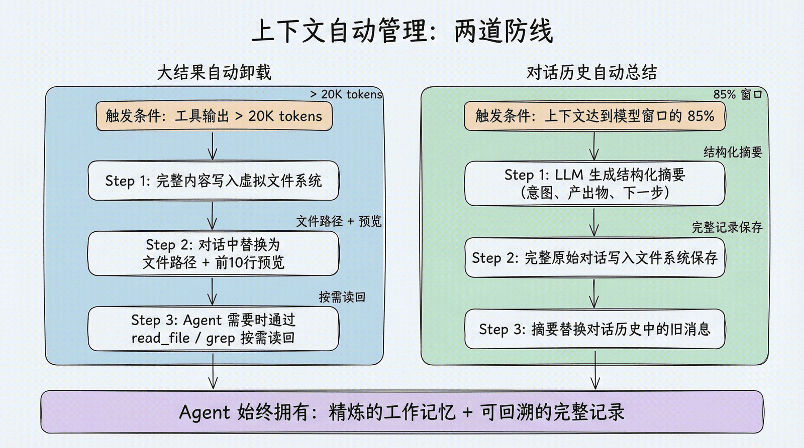
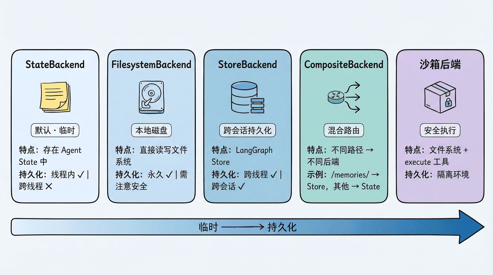

DeepAgent：虚拟文件系统
一、使用虚拟文件系统的原因
如果在Agent开发过程中，将会话记录，全部放入会话历史中，会导致出现以下问题：
- 上下文窗口溢出与截断：大量信息堆积在上下文中，导致超出模型的最大上下文容量，产生报错或被截断。
- 成本与延迟飙升：Transformer注意力复杂度随长度近似平方增长，每轮输入随轮数增长，成本线性上升。
- 模型注意力稀释，性能下降：中间部分信息被忽略。指令遵循下降、幻觉增加、重复提问、前后矛盾。
- 旧信息、过时状态污染决策：用户已经改口、撤销指令、更新偏好，但旧记录仍在上下文里。
- 上下文污染与安全风险：敏感信息、API Key、用户隐私也会因全量回传扩大泄露面，多租户场景还可能串数据。
- 工程与可维护性变差：出问题时很难定位是哪条历史影响了输出。
在DeepAgent中使用虚拟文件系统可以实现，按需读取、结构化存储、搜索定位。
二、内置文件系统工具
| 工具 | 用途 |
|---|---|
**ls** |
查看目录下内容 |
**read_file** |
阅读文件 |
**write_file** |
写文件（创建文件、覆盖） |
**edit_file** |
替换（改局部内容时） |
**delete** |
删除文件或目录 |
**glob** |
模式匹配查找文件 |
**grep** |
全文检索 |
搜索结果及其边界：
- read_file：会返回分页信息和下一段偏移量
- grep、glob：可能返回有效但不完整的结果，并通过 truncated=True 明示截断
- grep：默认最多保留 1000 个匹配
调用成功只代表工具正常执行，不代表已经得到全集，后续应缩小目录或匹配条件继续搜索。
工具输出文本是给模型读的，不是给程序解析的。程序应该消费结构化 Backend 结果；文本格式变化只影响展示和快照，不应影响业务逻辑。
2.1 read_file特性
-
分片读取
-
对于大文件，支持按偏移量和行数读取，避免把整个文件塞进上下文
1 | # 默认最多读取前 100 行 read_file("/dcz/doc.md") # 从第 1 行开始，读取 50 行 read_file("/dcz/doc.md", offset=1, limit=50) |
-
原生多模态支持
-
图片：
**.png****.jpg****.jpeg****.gif****.webp****.heic****.heif** -
视频：
**.mp4****.mpeg****.mov****.avi****.flv****.mpg****.webm****.wmv****.3gpp** -
音频：
**.wav****.mp3****.aiff****.aac****.ogg****.flac** -
文档：
**.pdf****.ppt****.pptx**
2.2 grep的三种输出模式
- files_with_matches：只返回文件路径（快速定位）
- content：返回匹配行和上下文（深入查看）
- count：返回匹配数量（概览统计）
1 | # 找到所有包含 "TODO" 的 Python 文件 |
三、上下文自动管理：不只是存文件
3.1 大结果自动卸载
当工具调用的输入或输出超过 20,000 tokens 时（可通过 tool_token_limit_before_evict 配置），Deep Agents 会自动：
- 将完整内容写入虚拟文件系统
- 在对话历史中替换为文件路径引用 + 前 10 行预览
- Agent 需要时可以按需读回
1 | 原始结果：[50000 tokens 的搜索结果] |
这个机制是完全自动的——Agent 不需要手动管理，但可以随时通过 read_file 或 grep 重新访问完整内容。
3.2 对话历史总结
当上下文大小达到模型窗口的 85% 时，如果没有更多可卸载的内容，Deep Agents 会启动自动总结：
- 用 LLM 生成对话的结构化摘要（意图、产出物、下一步）
- 将完整的原始对话写入文件系统保存
- 用摘要替换对话历史中的旧消息
这种”双保险”设计意味着：
- Agent 既有精炼的工作记忆（摘要）
- 又能在需要时回溯细节（文件系统中的完整记录）。

四、可插拔的存储后端
可以根据场景选择不同的存储策略
4.1 StateBackend（默认）：临时存储
1 | from deepagents import create_deep_agent |
文件存在 LangGraph 的 Agent State 中。
特点：
- 同一个对话线程内持久化（多轮对话不丢失）
- 对话结束后丢失（换一个 thread 就没了）
- 主 Agent 和子 Agent 共享文件
适合场景：大多数情况下的默认选择，Agent 的”草稿纸”。
4.2 FilesystemBackend：本地磁盘
1 | from deepagents.backends import FilesystemBackend |
文件直接读写本地文件系统。
特点：
-
root_dir 指定 Agent 可访问的根目录；
-
相对路径会被解析为绝对路径（Path(root_dir).resolve()），“.” 即当前工作目录
-
virtual_mode=True 启用路径沙箱（阻止 …、~ 及越界的绝对路径），强烈建议开启；
-
若为默认的 virtual_mode=False，即使设了 root_dir 也不提供任何越界保护
-
文件修改是永久的、不可逆的
-
FilesystemBackend 的 virtual_mode=True 只提供路径遍历防护，不是完整沙箱。
适合场景：本地开发 CLI（编程助手）、CI/CD 流水线。
⚠️ 安全提示：Agent 可以读取 root_dir 下所有文件，包括 .env、密钥等敏感文件。Web 服务或 API 场景中切勿使用此后端，应改用沙箱后端。建议配合 Human-in-the-Loop 使用。
4.3 LocalShellBackend：本地 Shell 执行
1 | from deepagents.backends import LocalShellBackend |
LocalShellBackend 是 FilesystemBackend 的扩展，在文件系统工具之外额外提供 execute 工具，可直接在宿主机运行 Shell 命令。
特点：
- 命令通过 subprocess.run(shell=True) 执行，无任何沙箱隔离
- 支持 timeout（默认 120 秒）、max_output_bytes（默认 100,000）、env 等参数
- root_dir 作为命令的工作目录，但命令可访问系统上任意路径
- LocalShellBackend 无沙箱隔离，生产/多用户环境禁用
适合场景：本地开发环境的编程助手、你完全信任 Agent 行为的个人开发机。
⚠️ 极高风险警告：Agent 可执行任意 Shell 命令，包括删除文件、外传数据、消耗资源。绝对不要在生产环境或多用户系统中使用。 沙箱后端是生产环境的安全替代方案。
如果确实要在个人开发机中临时使用，至少做几层防护：
- 将 root_dir 指向一个专门的临时工作区，而不是用户主目录或整个仓库上级目录
- 显式设置 virtual_mode=True，并用最小化的 env / PATH 降低命令可见范围
- 不把 .env、私钥、云凭证、生产配置文件放进 Agent 可访问目录
- 对 rm、mv、安装依赖、修改配置、访问网络等高风险操作增加 Human-in-the-Loop 审批
- 需要运行不可信代码、处理用户上传文件或对外提供服务时，直接换用沙箱后端，不要用 LocalShellBackend
4.4 StoreBackend：跨会话持久化
1 | from langgraph.store.memory import InMemoryStore |
文件存在 LangGraph 的 Store 中。
特点：
- 跨线程持久化——不同对话都能访问同一份文件
- namespace 参数控制数据隔离：lambda rt: (rt.server_info.user.identity,) 按用户隔离，防止数据混用
- 开发用 InMemoryStore，部署到 LangSmith 时省略 store 参数（平台自动配置）
适合场景：长期记忆、跨会话的用户偏好、累积的知识库。
4.5 CompositeBackend：混合路由
这是最灵活的方案——不同路径走不同后端：
1 | from deepagents import create_deep_agent |
💡 namespace 本地需要加 if rt.server_info else (“local-user”,) 兜底。
效果：
- Agent 写入 /workspace/plan.md → StateBackend（临时）
- Agent 写入 /memories/preferences.txt → StoreBackend（持久化，按用户隔离）
- ls、glob、grep 自动聚合所有后端的结果，路径前缀保留
这种设计让 Agent 既有快速的”草稿纸”（State），又有持久的”记忆库”（Store），通过路径前缀自然隔离。
4.6 沙箱后端：安全代码执行
当使用沙箱后端（Modal、Daytona、Runloop 等）时，除了文件系统工具外，Agent 还会获得一个额外的 execute 工具，可以在隔离环境中执行 Shell 命令：
1 | # 沙箱后端自动提供 execute 工具 |

4.7 后端对比表
| 后端 | 数据/执行位置 | 持久化范围 | Shell /execute 能力 | 隔离与安全 | 关键配置 | 适合场景 |
|---|---|---|---|---|---|---|
| StateBackend（默认） | LangGraph 的 Agent State | 同一对话线程内持久；换 thread 丢失 | 无 | 随 Agent State，无独立沙箱 | 默认即可，无需显式指定 | 大多数默认选择、Agent 的“草稿纸”；主 Agent 和子 Agent 共享文件 |
| FilesystemBackend | 本地磁盘 | 永久、不可逆 | 无，仅文件系统工具 | 依赖 virtual_mode=True开启路径沙箱；否则即使设 root_dir也无越界保护 |
root_dir="."、virtual_mode=True |
本地开发 CLI、编程助手、CI/CD |
| LocalShellBackend | 本地磁盘 + 宿主机 Shell | 文件永久 | 有 execute，通过 subprocess.run(shell=True)执行 |
无沙箱隔离；命令可访问系统任意路径 | root_dir、virtual_mode=True、env、timeout（默认 120s）、max_output_bytes（默认 100,000） |
个人开发机、完全信任 Agent 行为的本地编程助手 |
| StoreBackend | LangGraph Store | 跨线程、跨会话持久 | 无 | 通过 namespace做数据隔离 |
namespace必填；开发用 InMemoryStore，部署 LangSmith 可省略 store |
长期记忆、跨会话用户偏好、累积知识库 |
| CompositeBackend | 按路径路由到不同后端 | 取决于被路由的后端 | 取决于被路由的后端 | 取决于被路由的后端 | default、routes；v0.7 必须直接传 CompositeBackend(...) 实例 |
State 草稿 + Store 记忆混合，例如 /workspace/临时、/memories/持久 |
| 沙箱后端（Modal、Daytona、Runloop 等） | 隔离沙箱环境 | 取决于沙箱配置 | 自动提供 execute |
隔离环境，生产环境的安全替代方案 | backend=sandbox实例 |
生产、不可信代码、用户上传文件、对外服务 |
- 默认 / 临时草稿：
StateBackend - 本地文件持久化：
FilesystemBackend+virtual_mode=True - 需要本地 Shell 且完全信任 Agent：
LocalShellBackend，但必须加严格防护 - 跨会话长期记忆：
StoreBackend - 草稿 + 长期记忆混合：
CompositeBackend - 生产 / 不可信代码 / 多用户服务：沙箱后端，不要用 LocalShellBackend
4.8 关键配置与风险提醒
| 后端 | 重点提醒 |
|---|---|
| StateBackend | 对话结束或换 thread 后文件丢失；适合临时草稿，不适合长期记忆。 |
| FilesystemBackend | virtual_mode从 0.5.0 起不显式声明会弃用警告，0.6.0 起必填，建议直接 virtual_mode=True。Agent 可读取 root_dir 下所有文件，包括 .env、密钥等；Web 服务或 API 场景切勿使用。 |
| LocalShellBackend | 极高风险：可删除文件、外传数据、消耗资源。绝对不要用于生产环境或多用户系统。若个人临时使用，至少：指向专用临时工作区、virtual_mode=True、最小化 env/PATH、不放敏感文件、高风险操作加 Human-in-the-Loop；不可信代码直接换沙箱后端。 |
| StoreBackend | namespace从 v0.5.0 起必填。rt.server_info.user.identity 在 LangSmith 部署时可用，但本地 invoke()时 rt.server_info是 None，需要兜底，例如 ("local-user",)。 |
| CompositeBackend | v0.7 兼容提醒：backend=必须直接传 CompositeBackend(...) 等实例；backend=lambda rt: ...工厂函数已移除。 StoreBackend(namespace=lambda rt: ...)仍支持。ls、glob、grep会自动聚合所有后端结果，并保留路径前缀。本地调试 namespace也要兜底。 |
| 沙箱后端 | 除文件系统工具外，Agent 会获得隔离环境中的 execute工具，例如可运行 pip install pandas && python analyze.py。生产环境优先选它。 |
五、 自定义后端与安全策略
5.1 声明式权限
1 | from deepagents import create_deep_agent, FilesystemPermission |
权限规则在工具调用前按声明顺序求值，采用 first-match-wins：第一个同时匹配 operations 和 paths 的规则决定结果；如果没有规则匹配，则默认允许。因此配置权限时，应将更具体的规则放在更宽泛的规则之前。
FilesystemPermission 的 mode 决定命中规则后的处理方式：
| mode | 行为 | 使用场景 |
|---|---|---|
| allow | 允许操作继续执行 | 为特定路径设置显式例外 |
| deny | 直接拒绝，不执行文件操作 | 无论谁发起都不应访问的路径 |
| interrupt | 暂停并等待人工决策 | 可以操作，但必须先经过审批的敏感路径 需要 Checkpointer，并使用与工具审批相同的 Command(resume=…)恢复协议 |
5.2 实现自定义后端
如果内置后端不满足需求（比如要接入 S3 或 Postgres），可以实现 BackendProtocol 接口：
1 | from deepagents.backends.protocol import ( |
BackendProtocol 的核心读写与搜索接口包括 ls、read、write、edit、grep、glob。如果后端要向 Agent 暴露 v0.7 的删除能力，还要实现 delete() 并返回 DeleteResult。包装器也必须同步转发或拒绝删除，不能只保护 write() 和 edit()。
5.3 安全策略：PolicyWrapper
对于需要拦截策略（速率限制、审计日志、内容检查）的场景，可以通过继承或包装后端实现：
方式一：继承现有后端
1 | from deepagents.backends.filesystem import FilesystemBackend |
方式二：通用包装器（适用于任何后端）
1 | from deepagents.backends.protocol import BackendProtocol, WriteResult, EditResult, DeleteResult |
**本文参考文献如下，非原创、非原创、非原创：
**https://datawhalechina.github.io/deepagents-in-action/chapters/ch03-virtual-filesystem/